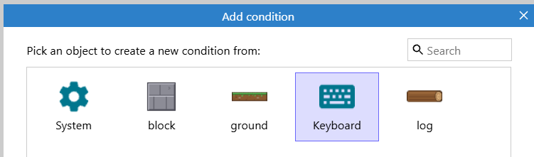
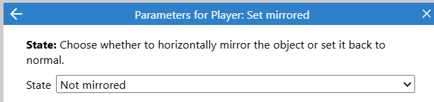

Right now the character always faces the same way. Two events flip it to face the direction it is running. This part is optional.
5A · Keyboard object
- Go to the Layout 1 tab (middle of the screen) and double-click an empty part of the layout. The Create new object type window opens. Click Keyboard (it turns grey when picked), then click Insert.

What changed: nothing appears on the layout, because Keyboard is not a picture. Check that Keyboard is now listed under Object types in the Project Bar (top-right). A message also pops up: Added 'Keyboard'.
5B · Events 2 and 3
| Event | Condition | Action |
|---|---|---|
| 2 | Keyboard → Key is down → Left arrow | Player → Set mirrored → Mirrored |
| 3 | Keyboard → Key is down → Right arrow | Player → Set mirrored → Not mirrored |
- On the event sheet, click Add event at the bottom of the sheet. The Add condition window opens; double-click Keyboard.

Then double-click Key is down (not On any key pressed). Click the key box, press the Left arrow, and click Done.
Click the key box, press the Left arrow, and click Done. - Grey Add action → Player → Set mirrored → Mirrored → Done.
- Now make event 3 for the right arrow. Click Add event at the bottom of the sheet again. In the Add condition window, double-click Keyboard, then double-click Key is down. Click the key box, press the Right arrow, and click Done. A new event 3 appears under event 2.
- On event 3, click the grey Add action → Player → Set mirrored. The Parameters for Player: Set mirrored window opens. Change the State dropdown from Mirrored to Not mirrored, then click Done.

- Preview. Run left and the character turns to face left; run right and it turns back.
Pick the right one: use Key is down, not On key pressed. Both work here, but Key is down keeps working while the key is held, which is what you want for running.
Checkpoint · Part 5